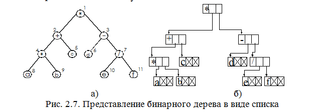

Для представления бинарного дерева достаточен двусвязный список. В отличие от линейного двусвязного списка, двусвязный список для представления бинарного дерева в общем случае не является линейным
Рассмотрим представление арифметического выражения (а*b+c)*(d-e/f) в виде дерева.
Стандартная форма представления бинарного дерева (рис.2.7) для арифметического выражения (а*b +с) * (d- e/f) приведена на рис. 2.7,б. Каждый узел дерева имеет две ссылки, в которые помещаются связи с левым и правым сыновьями узла соответственно.
|  |
Пример 2.3. Структура рассматриваемого дерева имеет вид:
typedef struct_ListTree{ //узелдерева
char data; //Данные
struct_ListTree *Right;
struct_ListTree *Left;
} ListTree;
typedef struct_BinTree{ // Собственнодерево
int Size;//Числоэлементовдерева
ListTree *root;
ListTree *current;
} BinTree;
Преимуществом представления бинарного дерева в связанной памяти, по сравнению с рассмотренным, является гораздо большая гибкость, предоставляемая в использовании узлов различных типов и набора допустимых операций над деревом. Значениями узлов бинарного дерева, реализованного в связанной памяти, могут быть строки символов переменной длины, любые числовые последовательности.
Так, использование представления почти полного бинарного дерева в виде массива может привести к большим затратам памяти, когда такое представление используется для организации бинарного дерева поиска для упорядоченных последовательностей.